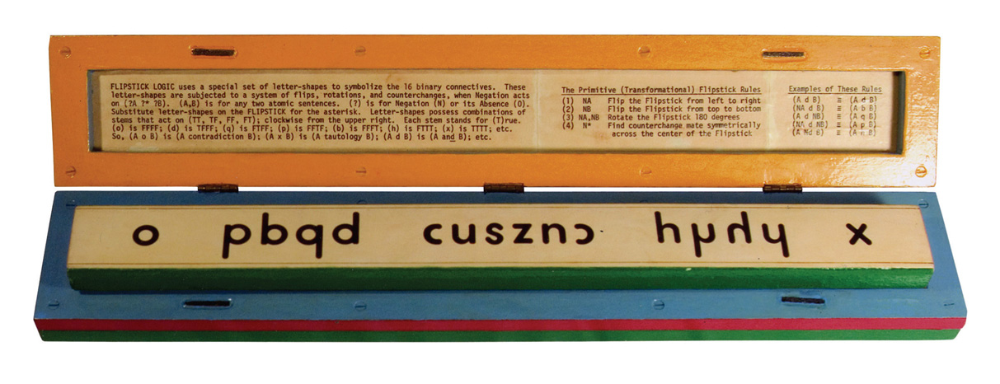
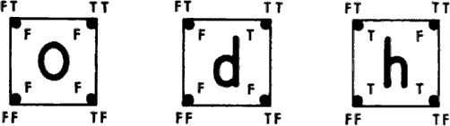
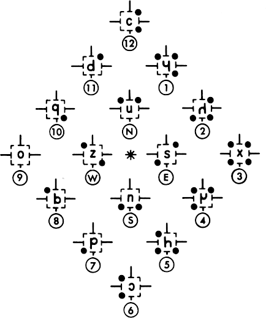

Shea Zellweger designed the Flipstick alphabet to encodes the logic relationships of
the binary table, it uses a special set of letter-shapes to symbolize 16 binary connectives. These letter-shapes are subjected to a system of flips, rotations and counterchanges.

Roman numerals are loaded with difficulties because they do not lay bare, in any transparent way, the interrelations among the number values. Notice, instead, that we use Arabic numerals when we build a multiplication table. When modern logic uses "dot, vee, horseshoe" to express "and, or, if" it also does not lay bare the rich web of interrelations that occupy the 16 connectives taken as a total system. Unfortunately, symbolic logic is miles away from coming up with its own multiplication table.
We have such high standards for number symbols, but it is odd indeed that the standards used for logic symbols are still so much lower.
(A, B) is for any two atomic sentences. (?) is for Negation (N) for its Abscence (O). Substitute letter-shapes on the Flipstick for the asterisk. Letter-shapes posses combinations of stems that act on (TT, TF, FF, Ft); clockwise from the upper right. Each stem stands for (T)rue. So, (A o B) is (A contradiction B); (A x B) is (A tautology B); (A d B) is (A and B); etc.

| TTTT | T | x | .... | OR | ɥ |
| FTTT | NAND | h | .... | XOR | z |
| .... | -> | 0xc | .... | q | u |
| .... | NOTp | ↄ | FFFT | NOT <- | b |
| .... | <- | 0xe | .... | p | c |
| .... | NOTq | n | FTFF | NOT -> | q |
| .... | <-> | s | TFFF | AND | d |
| FFTF | NOR | p | FFFF | F | o |
- NA Flip the Flipstick from left to right.
- NB Flip the Flipstick from top to bottom.
- NA,NB Rotate the Flipstick 180 degrees.
- N* Find counterchange mate symmetrically across the center of the Flipstick..
incoming: binary hexadecimal uxntal signs